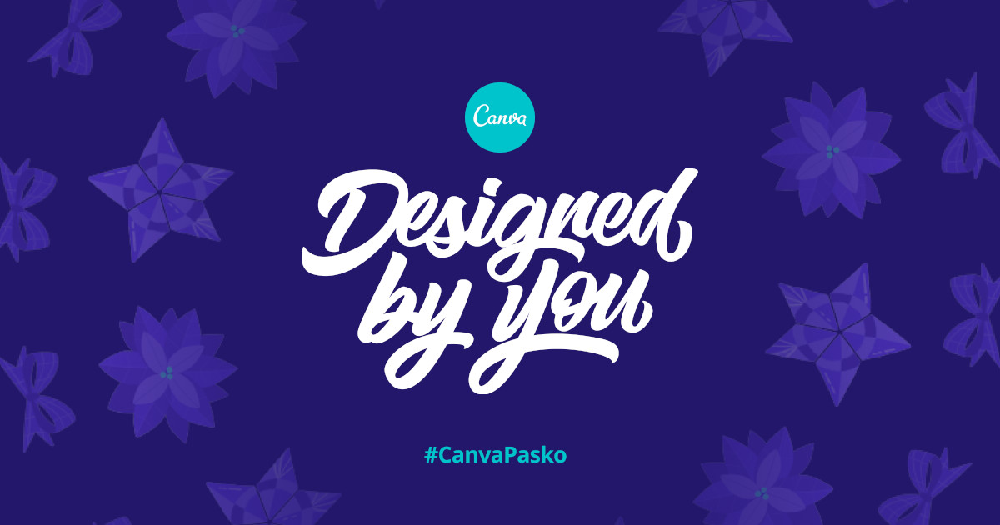

#CanvaPasko

Christmas designed by you!
#CanvaPasko was an online design contest where winning designs got featured on a real billboard.
Project details- released
- 2019
- role
- developer, animator
- platform
- Web
- tech
- React, CSS
The idea was that anyone can design. Even a billboard can be “designed by you”!
The contest ran around before Christmas and is Christmas-themed, so we had to work fast!
My role in this project was the implementation of the contest microsite where people created and submitted their entries. I also created some of the animations and interactions.
One of those nice interactions is the live preview where you could instantly preview your greeting card right as you type!
For this to work I had to deconstruct Canva templates, extract some textbox bounds, get fonts, colors, and then recreate them into a fast standalone preview component that can be included on the page without performance issues.
After selecting a card, an embedded Canva editor would pop up where you could further customize the design using the full features of Canva and finally submit your greeting card.
User flow
The page used a now-discontinued API called Canva Button.
My favorite part of the site was the pre-design and post-design screens.
The pre-design screen featured an interactive animated background with the participant’s starting template at front. Spin all the things!
I like making interactive things
The post-design screen shows the participant’s newly-created design in different contexts: (1) on a social media post and (2) on the billboard.
Social media post and billboard preview
I specifically requested the team to record a steady video of the billboard so I can use it as background for this preview animation. I have no idea how they got the recording as it was on a bridge and there were no good footpaths, but they delivered excellently.
All of these animations were implemented in pure CSS so it doesn’t interfere with the main thread. Except the spinny physics.
My goal with the animations was to delight, engage, and motivate the participants to visualize their prize and continue to wrap up their entry.
 Contest home page
Contest home page
The contest ran for about one month around Nov–Dec 2019 and got over a thousand entries.
Out of all submissions, 20 winners were selected to be displayed on the prize billboard, strategically located near the ultimate traffic chokepoint that is the Guadalupe Bridge in EDSA, center of Metro Manila, Philippines.
The best thing about this project were the participants’ entries. It wouldn’t be called “Designed By You” for nothing! Looks like they had some fun designing the cards and connecting with their loved ones.
It’s very nice to have worked on a project like this that impacted people on a personal level.